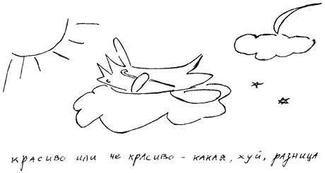

ПАМЯТИ КУРИЦЫНА

Умер Курицын.
Последний русский критик. Если до Курицына
считалось, что есть писатели, а есть - критики, при
нем, что критики - это и есть писатели, то после
него не осталось ни тех, ни других.
Оно и понятно - какая может быть литература в наше
время, когда даже компьютеры сменились коварными
и шустрыми КЖБЗ, а все виды искусства слились в
единый S.
Я любил его. Любил за тексты: смаковать их было
столь же приятно, как и французское красное вино
после хорошего гашиша.
Я считал его единственным настоящим критиком.
Впрочем, он таковым и являлся.
Я не был с ним знаком лично. Лишь однажды судьба
свела нас. Это произошло в конце девяностых годов
прошлого столетия, когда многие писатели и
критики мутировали в политиков. Курицын
возглавлял штаб одной из партий, и через его
помощников я получил заказ на "халтуру" - как
редактор, я должен был подготовить к печати
книгу. Тут необходимо некоторое пояснение. В то
время, в конце девяностых, существовало такое
понятие "халтура", незнакомое нынешнему
поколению молодых. Люди искусства занимались
любимым делом исключительно для себя, а деньги
зарабатывали чем-то абсолютно другим. Это другое
и называлось "халтурой".
Я согласился. В процессе работы с Курицыным
встречаться не приходилось, однако когда дело
дошло до типографии, потребовалось, чтобы он
утвердил макет.
В машине, кроме водителя и Курицына, оказались я и
сотрудник штаба провинциальный художник
Шабуров. Дело было слякотной зимой, мои
антикварные ботинки промокли насквозь. Всю
дорогу мы ехали молча. Поездка не предвещала
ничего хорошего.
Когда мы почти добрались до особняка, где
располагалось наше дизайн-бюро, и приключилось
самое ужасное. Мы заблудились. Дорогу знал один я,
но знал приблизительно, с дизайнером общался
лишь по телефону, и в столь ответственный момент
все его указания вылетели у меня из головы. К тому
же с детства я страдаю топографической идиотией,
путь к любому месту запоминаю раза с двадцатого.
Они орали на меня хором. Пуще всех орал водитель,
сам всю дорогу продвигавшийся в этот отдаленный
район Москвы с помощью карты. Курицын обвинял
меня в тупости. Шабуров поддакивал.
Чудом, после получаса блужданий, мы нашли здание
дизайн-бюро. Первым ворвался внутрь Курицын,
напоминавший в том момент разъяренного медведя
из старого фильма про "Синее сало", за ним
взъерошенным хомяком подпрыгивал Шабуров, сзади
неуклюжим колобком перекатывался я. Нечего и
говорить, что Курицын едва бросил взгляд на экран
монитора, как тут же закричал: "Хуйня! Уволить!"
Участь дизайнера была решена быстрее, чем пуля
летит от дула до виска поэта. "А ты что думаешь?"
- спросил вдруг Курицын, скосив глаза в разные
стороны, так что его взгляд заключал меня в
объятия и больно бил по ребрам. "Я.. я.. конечно,
хуйня! Форменная хуйня!" - жалобно пролепетал я,
не желая перечить начальству. Честно говоря, в
вопросах дизайна, как и в большинстве остальных,
я - полный лох, и мне было тогда абсолютно все
равно. Лишь бы больше не били по ребрам. Так же
молча мы вернулись на работу.
Всю ночь я не спал, ворочался с боку на бок. Меня
мучили угрызения совести. Мне было жаль
уволенного ни за что дизайнера, симпатичного, в
общем-то парня. "А вдруг он сделал прекрасный
макет? А вдруг он вообще гений, умелец чистой
воды?" - задавался я безответными вопросами. Я-то
ничего ни в чем не понимаю. А малый по моей вине
попался под горячую руку.
Утром мы с новым дизайнером по фамилии Каталкин
отправились забирать материалы во вчерашнее
место. Я старался не глядеть в глаза
пострадавшему. Каталкин усугубил дело, при
выходе заявив: "Да-а, нормальный макет. Все путем.
И за что только этого несчастного слили?"
С тяжелым сердцем и убитой душой я провел день.
Вечером однако, при более пристальном
рассмотрении, выяснилось: книга была сверстана
не наборным кеглем, а строчки на оборотной
стороне листа не были приведены в соответствие
со строчками на лицевой. Парень, судя по всему,
верстал книгу в первый раз и просто не знал, как
это делается. Курицын заметил то, чего не
заметили ни я, ни дизайнер Каталкин, ни даже
немолодой и многоопытный художник Шабуров. В
душе моей вновь расцвел зимний сад.
Поэтому сложно сказать, умер Курицын или нет.
Даже если он умер как критик, то жив как отец
нового поколения быстроглазых художников,
работающих на высокоскоростных КЖБЗ. Вот кто
оказался вылитым гением. Монстром дизайна.
Ильяc Фалько |